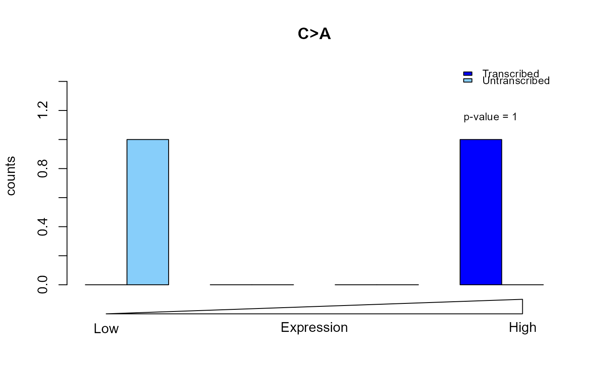

R/strandbias_functions.R
PlotTransBiasGeneExp.RdPlot transcription strand bias with respect to gene expression values
PlotTransBiasGeneExp(
annotated.SBS.vcf,
expression.data,
Ensembl.gene.ID.col,
expression.value.col,
num.of.bins,
plot.type,
damaged.base = NULL,
ymax = NULL
)An SBS VCF annotated by
AnnotateSBSVCF. It must have transcript range
information added.
A data.table which contains the
expression values of genes.
See GeneExpressionData for more
details.
Name of column which has the Ensembl gene ID
information in expression.data.
Name of column which has the gene expression
values in expression.data.
The number of bins that will be plotted on the graph.
A character string indicating one mutation type to be plotted. It should be one of "C>A", "C>G", "C>T", "T>A", "T>C", "T>G".
One of NULL, "purine" or
"pyrimidine". This function allocates approximately
equal numbers of mutations from damaged.base into
each of num.of.bins bin by expression level. E.g.
if damaged.base is "purine", then mutations from
A and G will be allocated in approximately equal numbers to
each expression-level bin. The rationale for the name damaged.base
is that the direction of strand bias is a result of whether the damage
occurs on a purine or pyrimidine.
If NULL, the function attempts to infer the damaged.base
based on mutation counts.
Limit for the y axis. If not specified, it defaults to NULL and the y axis limit equals 1.5 times of the maximum mutation counts in a specific mutation type.
A list whose first element is a logic value indicating whether the plot is successful. The second element is a named numeric vector containing the p-values printed on the plot.
The p-values are calculated by logistic regression using function
glm. The dependent variable is labeled "1" and "0" if
the mutation from annotated.SBS.vcf falls onto the untranscribed and
transcribed strand respectively. The independent variable is the binary
logarithm of the gene expression value from expression.data plus one,
i.e. \(log_2 (x + 1)\) where \(x\) stands for gene
expression value.
file <- c(system.file("extdata/Strelka-SBS-vcf/",
"Strelka.SBS.GRCh37.s1.vcf",
package = "ICAMS"))
list.of.vcfs <- ReadAndSplitVCFs(file, variant.caller = "strelka")
SBS.vcf <- list.of.vcfs$SBS[[1]]
if (requireNamespace("BSgenome.Hsapiens.1000genomes.hs37d5", quietly = TRUE)) {
annotated.SBS.vcf <- AnnotateSBSVCF(SBS.vcf, ref.genome = "hg19",
trans.ranges = trans.ranges.GRCh37)
PlotTransBiasGeneExp(annotated.SBS.vcf = annotated.SBS.vcf,
expression.data = gene.expression.data.HepG2,
Ensembl.gene.ID.col = "Ensembl.gene.ID",
expression.value.col = "TPM",
num.of.bins = 4, plot.type = "C>A")
}
#> Warning: glm.fit: fitted probabilities numerically 0 or 1 occurred

#> $plot.success
#> [1] TRUE
#>
#> $p.values
#> overall C>A C>G C>T T>A T>C T>G
#> 0.9996536 0.9996654 NA NA NA NA NA
#>